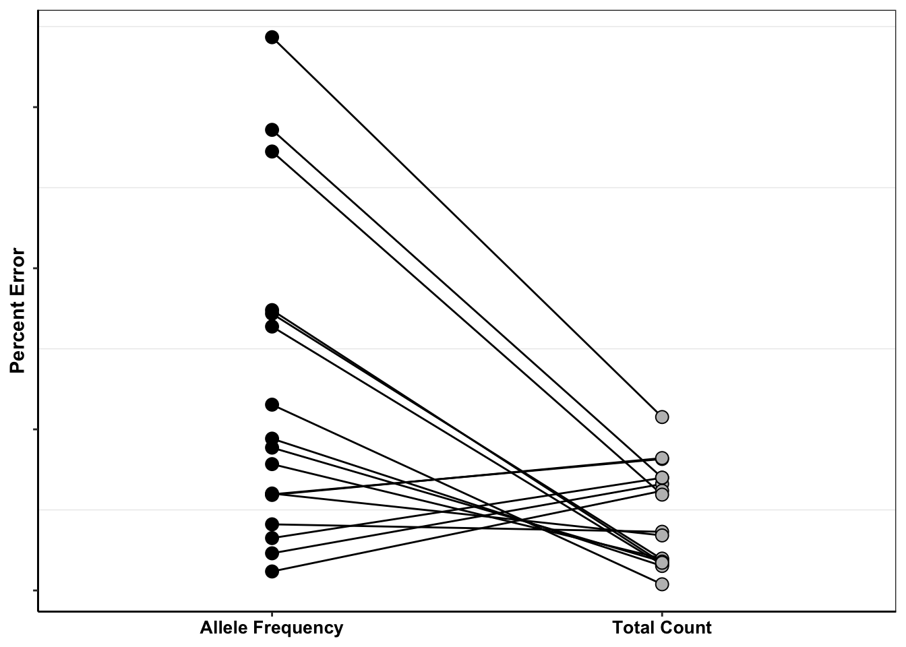

Misc
Haider Inam
4/3/2020
Last updated: 2020-07-06
Checks: 7 0
Knit directory: duplex_sequencing_screen/
This reproducible R Markdown analysis was created with workflowr (version 1.6.2). The Checks tab describes the reproducibility checks that were applied when the results were created. The Past versions tab lists the development history.
Great! Since the R Markdown file has been committed to the Git repository, you know the exact version of the code that produced these results.
Great job! The global environment was empty. Objects defined in the global environment can affect the analysis in your R Markdown file in unknown ways. For reproduciblity it’s best to always run the code in an empty environment.
The command set.seed(20200402) was run prior to running the code in the R Markdown file. Setting a seed ensures that any results that rely on randomness, e.g. subsampling or permutations, are reproducible.
Great job! Recording the operating system, R version, and package versions is critical for reproducibility.
Nice! There were no cached chunks for this analysis, so you can be confident that you successfully produced the results during this run.
Great job! Using relative paths to the files within your workflowr project makes it easier to run your code on other machines.
Great! You are using Git for version control. Tracking code development and connecting the code version to the results is critical for reproducibility.
The results in this page were generated with repository version 6cbfcb1. See the Past versions tab to see a history of the changes made to the R Markdown and HTML files.
Note that you need to be careful to ensure that all relevant files for the analysis have been committed to Git prior to generating the results (you can use wflow_publish or wflow_git_commit). workflowr only checks the R Markdown file, but you know if there are other scripts or data files that it depends on. Below is the status of the Git repository when the results were generated:
Ignored files:
Ignored: .Rhistory
Ignored: .Rproj.user/
Untracked files:
Untracked: analysis/bcrabl_hill_ic50s.csv
Untracked: analysis/column_definitions_for_twinstrand_data_06062020.csv
Untracked: analysis/dose_response_curve_fitting_with_errorbars.Rmd
Untracked: analysis/dosing_normalization_standard_deviations.pdf
Untracked: analysis/multinomial_sims.Rmd
Untracked: analysis/pooled_growth_fig_corrected_070320.pdf
Untracked: analysis/r1r2_1in3000.pdf
Untracked: analysis/r1r2_1in5000.pdf
Untracked: analysis/r1r3_1in3000.pdf
Untracked: analysis/simple_data_generation.Rmd
Untracked: analysis/twinstrand_growthrates_simple.csv
Untracked: analysis/twinstrand_maf_merge_simple.csv
Untracked: analysis/wildtype_growthrates_sequenced.csv
Untracked: code/microvariation.normalizer.R
Untracked: data/Combined_data_frame_IC_Mutprob_abundance.csv
Untracked: data/IC50HeatMap.csv
Untracked: data/Twinstrand/
Untracked: data/gfpenrichmentdata.csv
Untracked: data/heatmap_concat_data.csv
Untracked: figures_archive/
Untracked: output/archive/
Untracked: output/bmes_abstract_51220.pdf
Untracked: output/clinicalabundancepredictions_BMES_abstract_51320.pdf
Untracked: output/clinicalabundancepredictions_BMES_abstract_52020.pdf
Untracked: output/enrichment_simulations_3mutants_52020.pdf
Untracked: output/grant_fig.pdf
Untracked: output/grant_fig_v2.pdf
Untracked: output/grant_fig_v2updated.pdf
Untracked: output/ic50data_all_conc.csv
Untracked: output/ic50data_all_confidence_intervals_individual_logistic_fits.csv
Untracked: output/ic50data_all_confidence_intervals_raw_data.csv
Untracked: output/twinstrand_microvariations_normalized.csv
Untracked: shinyapp/
Unstaged changes:
Modified: analysis/4_7_20_update.Rmd
Modified: analysis/E255K_alphas_figure.Rmd
Modified: analysis/clinical_abundance_predictions.Rmd
Modified: analysis/dose_response_curve_fitting.Rmd
Modified: analysis/nonlinear_growth_analysis.Rmd
Modified: analysis/spikeins_depthofcoverages.Rmd
Modified: analysis/twinstrand_spikeins_data_generation.Rmd
Deleted: data/README.md
Modified: output/twinstrand_maf_merge.csv
Modified: output/twinstrand_simple_melt_merge.csv
Note that any generated files, e.g. HTML, png, CSS, etc., are not included in this status report because it is ok for generated content to have uncommitted changes.
These are the previous versions of the repository in which changes were made to the R Markdown (analysis/misc.Rmd) and HTML (docs/misc.html) files. If you’ve configured a remote Git repository (see ?wflow_git_remote), click on the hyperlinks in the table below to view the files as they were in that past version.
| File | Version | Author | Date | Message |
|---|---|---|---|---|
| Rmd | 6cbfcb1 | haiderinam | 2020-07-06 | wflow_publish(“analysis/misc.Rmd”) |
| html | efd5243 | haiderinam | 2020-06-07 | Build site. |
| Rmd | e2f801a | haiderinam | 2020-06-07 | wflow_publish(“analysis/misc.Rmd”) |
| html | eaca616 | haiderinam | 2020-04-20 | Build site. |
| Rmd | 2bba93e | haiderinam | 2020-04-20 | wflow_publish("analysis/*.Rmd") |
| html | c3e9499 | haiderinam | 2020-04-10 | Build site. |
| Rmd | 7a5e2ff | haiderinam | 2020-04-10 | wflow_publish(“analysis/misc.Rmd”) |
| html | e477777 | haiderinam | 2020-04-06 | Build site. |
| Rmd | 0a6e9cb | haiderinam | 2020-04-06 | wflow_publish(files = “analysis/misc.Rmd”) |
Here I include some miscellaneous, pre-prod analyses
Shendure vs Our Method using CIs generated from Raw IC50s.
# twinstrand_maf_merge=read.csv("../output/twinstrand_maf_merge.csv",header = T,stringsAsFactors = F,row.names = 1)
twinstrand_maf_merge=read.csv("output/twinstrand_maf_merge.csv",header = T,stringsAsFactors = F)
# ic50data_all_sum=read.csv("../output/ic50data_all_confidence_intervals_raw_data.csv",row.names = 1)
ic50data_all_sum=read.csv("output/ic50data_all_confidence_intervals_raw_data.csv",row.names = 1)
#First, creating day 0 values for M4,M5,M7, and sp_enu_3. Whenever you see any of these experiments, add M3's or M6's or Sp_Enu4's D0 counts for its counts.
M3D0=twinstrand_maf_merge%>%filter(experiment=="M3",time_point=="D0")
M5D0=M3D0%>%mutate(experiment="M5")
M7D0=M3D0%>%mutate(experiment="M7")
M6D0=twinstrand_maf_merge%>%filter(experiment=="M6",time_point=="D0")
M4D0=M6D0%>%mutate(experiment="M4")
Enu4_D0=twinstrand_maf_merge%>%filter(experiment=="Enu_4",time_point=="D0")
Enu3_D0=Enu4_D0%>%mutate(experiment="Enu_3")
twinstrand_maf_merge=rbind(twinstrand_maf_merge,M5D0,M7D0,M4D0,Enu3_D0)
########################Plotting Count with CIs########################
twinstrand_maf_merge=twinstrand_maf_merge%>%filter(experiment%in%c("M3","M5","M7"))%>%mutate(MAF=AltDepth/Depth)
# twinstrand_maf_merge=twinstrand_maf_merge%>%filter(experiment%in%c("Enu_3","Enu_4"))%>%mutate(MAF=AltDepth/Depth)
twinstrand_maf_merge=merge(twinstrand_maf_merge%>%
filter(tki_resistant_mutation=="True",!mutant%in%c("D276G",NA)),ic50data_all_sum%>%
dplyr::select(species,netgr_pred_mean,netgr_pred_ci_ul,netgr_pred_ci_ll,netgr_pred_sd_ul,netgr_pred_sd_ll,netgr_pred_model,netgr_pred_model_sd_ul,netgr_pred_model_sd_ll),by.x="mutant",by.y="species")
twinstrand_simple=twinstrand_maf_merge%>%dplyr::select(AltDepth,Depth,tki_resistant_mutation,mutant,experiment,Spike_in_freq,time_point,totalcells,totalmutant,MAF,netgr_pred_mean,netgr_pred_ci_ul,netgr_pred_ci_ll,netgr_pred_sd_ul,netgr_pred_sd_ll,netgr_pred_model,netgr_pred_model_sd_ul,netgr_pred_model_sd_ll)
twinstrand_merge_forplot=melt(twinstrand_simple,id.vars = c("AltDepth","Depth","tki_resistant_mutation","mutant","experiment","Spike_in_freq","time_point","totalcells","netgr_pred_mean","netgr_pred_ci_ul","netgr_pred_ci_ll","netgr_pred_sd_ul","netgr_pred_sd_ll","netgr_pred_model","netgr_pred_model_sd_ul","netgr_pred_model_sd_ll"),variable.name = "count_type",value.name = "count")
# twinstrand_merge_forplot=merge(twinstrand_maf_merge%>%filter(experiment=="M3",tki_resistant_mutation=="True",!mutant%in%c("D276G",NA)),ic50data_all_sum%>%dplyr::select(species,netgr_pred_mean,netgr_pred_ci_ul,netgr_pred_ci_ll,netgr_pred_sd_ul,netgr_pred_sd_ll),by.x="mutant",by.y="species")
#Basically making an extra column with the D0 total mutant counts for each mutant
# a=twinstrand_maf_merge%>%filter(time_point=="D0")
twinstrand_merge_forplot=merge(twinstrand_merge_forplot,twinstrand_merge_forplot%>%filter(time_point=="D0")%>%dplyr::select(mutant,count_type,experiment,count_D0=count),by=c("mutant","count_type","experiment"))
#########Here, figure out why twinstrand_merge_forplot is having two rows for each mutant after being merged with a D0 version of itself. This is leading to weird plotting artifacts
# a=twinstrand_merge_forplot%>%filter(count_type=="totalmutant",mutant=="E255K",time_point=="D0")
############
twinstrand_merge_forplot=twinstrand_merge_forplot%>%mutate(time=case_when(time_point=="D0"~0,
time_point=="D3"~72,
time_point=="D6"~144),
ci_mean=count_D0*exp(netgr_pred_mean*time),
ci_ul=count_D0*exp(netgr_pred_ci_ul*time),
ci_ll=count_D0*exp(netgr_pred_ci_ll*time),
sd_ul=count_D0*exp(netgr_pred_sd_ul*time),
sd_ll=count_D0*exp(netgr_pred_sd_ll*time))
####Should probably not use sd_ul, sd_ul etc for predictions because they're added to the means of the actual dose responses rather than the means of the dose responses off of the 4 parameter model. Use sd_ul_model, sd_ll_model instead
twinstrand_merge_forplot=twinstrand_merge_forplot%>%mutate(ci_ll=case_when(ci_ll=="NaN"~0,
TRUE~ci_ll))
####Since the more sensitive mutants were appearing to grow fast if I take the raw IC50 predicted growth rates, I am going to instead take the predicted growth rates from the IC50s that were fit on a 4-parameter logistic. To get standard deviations, I will just add/subtract the standard deviations from the regular plots.
# twinstrand_merge_forplot=merge(twinstrand_merge_forplot,ic50data_long%>%filter(conc==conc_for_predictions)%>%dplyr::select(mutant,netgr_pred_model=netgr_pred),by = "mutant")
# twinstrand_merge_forplot=twinstrand_merge_forplot%>%mutate(netgr_pred_model_sd_ul=netgr_pred_model+(netgr_pred_mean-netgr_pred_sd_ll),netgr_pred_model_sd_ll=netgr_pred_model-(netgr_pred_mean-netgr_pred_sd_ll))
twinstrand_merge_forplot=twinstrand_merge_forplot%>%
mutate(sd_mean_model=count_D0*exp(netgr_pred_model*time),
sd_ul_model=count_D0*exp(netgr_pred_model_sd_ul*time),
sd_ll_model=count_D0*exp(netgr_pred_model_sd_ll*time))
twinstrand_merge_forplot=twinstrand_merge_forplot%>%mutate(ci_ll=case_when(ci_ll=="NaN"~0,
TRUE~ci_ll))
###########
#Factoring the mutants from more to less resistant
twinstrand_merge_forplot$mutant=factor(twinstrand_merge_forplot$mutant,levels = as.character(unique(twinstrand_merge_forplot$mutant[order((twinstrand_merge_forplot$netgr_pred_mean),decreasing = T)])))
getPalette = colorRampPalette(brewer.pal(9, "Spectral"))
####In the plots below, the dashed line is the mean prediction form the IC50s. Points are what we see in the spike-in experiment
#Plotting IC50s form 4 Parameter model
plotly=ggplot(twinstrand_merge_forplot%>%filter(count_type=="totalmutant"),aes(x=time/24,y=count,fill=factor(mutant),shape=factor(count_type)))+geom_point()+
geom_line(aes(y=sd_mean_model),linetype="dashed")+
geom_ribbon(aes(ymin=sd_ll_model,ymax=sd_ul_model,alpha=.3))+
facet_wrap(~mutant,ncol=4)+
scale_y_continuous(trans="log2")+
cleanup+
scale_fill_manual(values = getPalette(length(unique(twinstrand_merge_forplot$mutant))))
ggplotly(plotly)plotly=ggplot(twinstrand_merge_forplot%>%filter(count_type=="MAF"),aes(x=time/24,y=count,fill=factor(mutant),shape=factor(count_type)))+geom_point()+
geom_line(aes(y=sd_mean_model),linetype="dashed")+
geom_ribbon(aes(ymin=sd_ll_model,ymax=sd_ul_model,alpha=.3))+
facet_wrap(~mutant,ncol=4)+
scale_y_continuous(trans="log2")+
cleanup+
scale_fill_manual(values = getPalette(length(unique(twinstrand_merge_forplot$mutant))))
ggplotly(plotly)plotly=ggplot(twinstrand_merge_forplot%>%filter(mutant%in%"T315I",count_type=="totalmutant"),aes(x=time/24,y=count,fill=factor(mutant),shape=factor(count_type)))+geom_boxplot()+
geom_line(aes(y=sd_mean_model),linetype="dashed")+
geom_ribbon(aes(ymin=sd_ll_model,ymax=sd_ul_model,alpha=.3))+
facet_wrap(~mutant,ncol=4)+
scale_y_continuous(trans="log2")+
cleanup+
scale_fill_manual(values = getPalette(length(unique(twinstrand_merge_forplot$mutant))))
ggplotly(plotly)#Calculating errors in observed datapoints.
twinstrand_merge_forplot_means=twinstrand_merge_forplot%>%group_by(mutant,count_type,time_point)%>%summarize(time=mean(time),count_mean_obs=mean(count),count_sd_obs=sd(count),sd_mean_model=mean(sd_mean_model),sd_ll_model=mean(sd_ll_model),sd_ul_model=mean(sd_ul_model))
ggplot(twinstrand_merge_forplot_means%>%filter(!mutant%in%c("E459K"),count_type%in%"totalmutant"),aes(x=time/24,y=count_mean_obs,fill=factor(mutant)))+
geom_point(size=.5)+
# geom_point(aes(color=factor(mutant),size=.1))+
geom_errorbar(aes(ymin=count_mean_obs-count_sd_obs,ymax=count_mean_obs+count_sd_obs),width=.7)+
facet_wrap(~mutant,ncol=4)+
cleanup+
scale_y_continuous(trans="log10",name="Count",breaks=c(1e2,1e4,1e6),labels=parse(text=c("10^2","10^4","10^6")))+
scale_x_discrete(name="Time (Days)",breaks=c(0,3,6),limits=c(1,1000000))+
theme(legend.position = "none")+
geom_line(aes(y=sd_mean_model),linetype="dashed")+
geom_ribbon(aes(ymin=sd_ll_model,ymax=sd_ul_model,alpha=.3))+
scale_fill_manual(values = getPalette(length(unique(twinstrand_merge_forplot$mutant))))+
scale_color_manual(values = getPalette(length(unique(twinstrand_merge_forplot$mutant))))+
theme(strip.text=element_blank(),
axis.title.x = element_blank(),
axis.title.y = element_blank())
# theme(strip.text=element_text(size=6,face="bold"),strip.background = element_rect(fill="white"))
# ggplotly(plotly)
# ggsave("bmes_abstract_51220.pdf",width=2,height=2,units="in",useDingbats=F)
# ggsave("pooled_growth_fig_cifromrawic50_060420.pdf",width=3,height=3,units="in",useDingbats=F)
# a=twinstrand_merge_forplot%>%filter(mutant=="F359I")
# b=a%>%filter(mutant=="F359I",count_type=="totalmutant",time_point=="D6")
#Problem now is that there is a lot of variation across experiments because of the different spike-in frequencies used and because of the random differences in Depth. This means that it doesn't really make sense to do error bars unless you normalize all experiments to start at a relative count of 1. So I am having to normalize to get a relative count of 1. Or not use the errorbars at all. I eventually ended up using only counts from M3
ggplot(twinstrand_merge_forplot_means%>%filter(mutant%in%c("T315I","L248V","E355A","F317L"),count_type%in%"totalmutant"),aes(x=time/24,y=count_mean_obs,fill=factor(mutant)))+
geom_point(size=.5)+
# geom_point(aes(color=factor(mutant),size=.1))+
geom_errorbar(aes(ymin=count_mean_obs-count_sd_obs,ymax=count_mean_obs+count_sd_obs),width=.7)+
facet_wrap(~mutant)+
cleanup+
scale_y_continuous(trans="log10",name="Count",breaks=c(1e2,1e4,1e6),labels=parse(text=c("10^2","10^4","10^6")))+
scale_x_discrete(name="Time (Days)",breaks=c(0,3,6),limits=c(1,1000000))+
theme(legend.position = "none")+
geom_line(aes(y=sd_mean_model),linetype="dashed")+
geom_ribbon(aes(ymin=sd_ll_model,ymax=sd_ul_model,alpha=.3))+
scale_fill_manual(values = getPalette(length(unique(twinstrand_merge_forplot$mutant))))+
scale_color_manual(values = getPalette(length(unique(twinstrand_merge_forplot$mutant))))+
theme(strip.text=element_blank(),
axis.title.x = element_blank(),
axis.title.y = element_blank())
# ggplotly(plotly)
##########Final figures for Shendure vs our method###################
####################Our method#############################
ggplot(twinstrand_merge_forplot_means%>%filter(!mutant%in%c("E459K"),count_type%in%"totalmutant"),aes(x=time/24,y=count_mean_obs,fill=factor(mutant)))+
geom_point(size=.5)+
# geom_point(aes(color=factor(mutant),size=.1))+
geom_errorbar(aes(ymin=count_mean_obs-count_sd_obs,ymax=count_mean_obs+count_sd_obs),width=.7)+
facet_wrap(~mutant,ncol=4)+
cleanup+
scale_y_continuous(trans="log10",name="Count",breaks=c(1e2,1e4,1e6),labels=parse(text=c("10^2","10^4","10^6")))+
scale_x_discrete(name="Time (Days)",breaks=c(0,3,6),limits=c(1,1000000))+
theme(legend.position = "none")+
geom_line(aes(y=sd_mean_model),linetype="dashed")+
geom_ribbon(aes(ymin=sd_ll_model,ymax=sd_ul_model,alpha=.3))+
scale_fill_manual(values = getPalette(length(unique(twinstrand_merge_forplot$mutant))))+
scale_color_manual(values = getPalette(length(unique(twinstrand_merge_forplot$mutant))))+
theme(strip.text=element_blank(),
axis.title.x = element_blank(),
axis.title.y = element_blank())
# ggsave("pooled_growth_shendure_cifromrawic50_060420.pdf",width=3,height=3,units="in",useDingbats=F)
####################Shendure method#############################
ggplot(twinstrand_merge_forplot_means%>%filter(!mutant%in%c("E459K"),count_type%in%"MAF"),aes(x=time/24,y=count_mean_obs,fill=factor(mutant)))+
geom_point(size=.5)+
# geom_point(aes(color=factor(mutant),size=.1))+
geom_errorbar(aes(ymin=count_mean_obs-count_sd_obs,ymax=count_mean_obs+count_sd_obs),width=.7)+
facet_wrap(~mutant,ncol=4)+
cleanup+
scale_y_continuous(trans="log10",name="Count",breaks=c(1e2,1e4,1e6),labels=parse(text=c("10^2","10^4","10^6")))+
scale_x_discrete(name="Time (Days)",breaks=c(0,3,6),limits=c(1,1000000))+
theme(legend.position = "none")+
geom_line(aes(y=sd_mean_model),linetype="dashed")+
geom_ribbon(aes(ymin=sd_ll_model,ymax=sd_ul_model,alpha=.3))+
scale_fill_manual(values = getPalette(length(unique(twinstrand_merge_forplot$mutant))))+
scale_color_manual(values = getPalette(length(unique(twinstrand_merge_forplot$mutant))))+
theme(strip.text=element_blank(),
axis.title.x = element_blank(),
axis.title.y = element_blank())# ggsave("pooled_growth_fig_cifromrawic50_060420.pdf",width=3,height=3,units="in",useDingbats=F)
######Plotting code for the Enu replicates####
#To make the enu plots, just uncomment this line above: twinstrand_maf_merge=twinstrand_maf_merge%>%filter(experiment%in%c("Enu_3","Enu_4"))%>%mutate(MAF=AltDepth/Depth)
ggplot(twinstrand_merge_forplot_means%>%filter(!mutant%in%c("F359C","E355G","F317L"),count_type%in%"totalmutant"),aes(x=time/24,y=count_mean_obs,fill=factor(mutant)))+
geom_point(size=.5)+
# geom_point(aes(color=factor(mutant),size=.1))+
geom_errorbar(aes(ymin=count_mean_obs-count_sd_obs,ymax=count_mean_obs+count_sd_obs),width=.7)+
facet_wrap(~mutant,ncol=3)+
cleanup+
scale_y_continuous(trans="log10",name="Count",breaks=c(1e2,1e4,1e6),labels=parse(text=c("10^2","10^4","10^6")))+
scale_x_discrete(name="Time (Days)",breaks=c(0,3,6),limits=c(1,1000000))+
theme(legend.position = "none")+
geom_line(aes(y=sd_mean_model),linetype="dashed")+
geom_ribbon(aes(ymin=sd_ll_model,ymax=sd_ul_model,alpha=.3))+
scale_fill_manual(values = getPalette(length(unique(twinstrand_merge_forplot$mutant))))+
scale_color_manual(values = getPalette(length(unique(twinstrand_merge_forplot$mutant))))+
theme(strip.text=element_blank(),
axis.title.x = element_blank(),
axis.title.y = element_blank())# ggsave("pooled_ENU_growth_fig_cifromrawic50_061620.pdf",width=3,height=2,units="in",useDingbats=F)Improving errorbars: First, I will just simply plot mean and normalized counts for all experiments
# rm(list=ls())
twinstrand_maf_merge=read.csv("output/twinstrand_maf_merge.csv",header = T,stringsAsFactors = F)
# twinstrand_maf_merge=read.csv("../output/twinstrand_maf_merge.csv",header = T,stringsAsFactors = F,row.names = 1)
# ic50data_all_sum=read.csv("../output/ic50data_all_confidence_intervals_raw_data.csv",row.names = 1)
ic50data_all_sum=read.csv("output/ic50data_all_confidence_intervals_raw_data.csv",row.names = 1)
#First, creating day 0 values for M4,M5,M7, and sp_enu_3. Whenever you see any of these experiments, add M3's or M6's or Sp_Enu4's D0 counts for its counts.
M3D0=twinstrand_maf_merge%>%filter(experiment=="M3",time_point=="D0")
M5D0=M3D0%>%mutate(experiment="M5")
M7D0=M3D0%>%mutate(experiment="M7")
M6D0=twinstrand_maf_merge%>%filter(experiment=="M6",time_point=="D0")
M4D0=M6D0%>%mutate(experiment="M4")
Enu4_D0=twinstrand_maf_merge%>%filter(experiment=="Enu_4",time_point=="D0")
Enu3_D0=Enu4_D0%>%mutate(experiment="Enu_3")
twinstrand_maf_merge=rbind(twinstrand_maf_merge,M5D0,M7D0,M4D0,Enu3_D0)
########################Plotting Count with CIs########################
twinstrand_maf_merge=twinstrand_maf_merge%>%filter(experiment%in%c("M3","M5","M7"))%>%mutate(MAF=AltDepth/Depth)
# twinstrand_maf_merge=twinstrand_maf_merge%>%filter(experiment%in%c("Enu_3","Enu_4"))%>%mutate(MAF=AltDepth/Depth)
twinstrand_maf_merge=merge(twinstrand_maf_merge%>%
filter(tki_resistant_mutation=="True",!mutant%in%c("D276G",NA)),ic50data_all_sum%>%
dplyr::select(species,netgr_pred_mean,netgr_pred_ci_ul,netgr_pred_ci_ll,netgr_pred_sd_ul,netgr_pred_sd_ll,netgr_pred_model,netgr_pred_model_sd_ul,netgr_pred_model_sd_ll),by.x="mutant",by.y="species")
twinstrand_simple=twinstrand_maf_merge%>%dplyr::select(AltDepth,Depth,tki_resistant_mutation,mutant,experiment,Spike_in_freq,time_point,totalcells,totalmutant,MAF,netgr_pred_mean,netgr_pred_ci_ul,netgr_pred_ci_ll,netgr_pred_sd_ul,netgr_pred_sd_ll,netgr_pred_model,netgr_pred_model_sd_ul,netgr_pred_model_sd_ll)
twinstrand_merge_forplot=melt(twinstrand_simple,id.vars = c("AltDepth","Depth","tki_resistant_mutation","mutant","experiment","Spike_in_freq","time_point","totalcells","netgr_pred_mean","netgr_pred_ci_ul","netgr_pred_ci_ll","netgr_pred_sd_ul","netgr_pred_sd_ll","netgr_pred_model","netgr_pred_model_sd_ul","netgr_pred_model_sd_ll"),variable.name = "count_type",value.name = "count")
# twinstrand_merge_forplot=merge(twinstrand_maf_merge%>%filter(experiment=="M3",tki_resistant_mutation=="True",!mutant%in%c("D276G",NA)),ic50data_all_sum%>%dplyr::select(species,netgr_pred_mean,netgr_pred_ci_ul,netgr_pred_ci_ll,netgr_pred_sd_ul,netgr_pred_sd_ll),by.x="mutant",by.y="species")
#Basically making an extra column with the D0 total mutant counts for each mutant
# a=twinstrand_maf_merge%>%filter(time_point=="D0")
twinstrand_merge_forplot=merge(twinstrand_merge_forplot,twinstrand_merge_forplot%>%filter(time_point=="D0")%>%dplyr::select(mutant,count_type,experiment,count_D0=count),by=c("mutant","count_type","experiment"))
#########Here, figure out why twinstrand_merge_forplot is having two rows for each mutant after being merged with a D0 version of itself. This is leading to weird plotting artifacts
# a=twinstrand_merge_forplot%>%filter(count_type=="totalmutant",mutant=="E255K",time_point=="D0")
############
twinstrand_merge_forplot=twinstrand_merge_forplot%>%mutate(time=case_when(time_point=="D0"~0,
time_point=="D3"~72,
time_point=="D6"~144),
ci_mean=count_D0*exp(netgr_pred_mean*time),
ci_ul=count_D0*exp(netgr_pred_ci_ul*time),
ci_ll=count_D0*exp(netgr_pred_ci_ll*time),
sd_ul=count_D0*exp(netgr_pred_sd_ul*time),
sd_ll=count_D0*exp(netgr_pred_sd_ll*time))
####Should probably not use sd_ul, sd_ul etc for predictions because they're added to the means of the actual dose responses rather than the means of the dose responses off of the 4 parameter model. Use sd_ul_model, sd_ll_model instead
twinstrand_merge_forplot=twinstrand_merge_forplot%>%mutate(ci_ll=case_when(ci_ll=="NaN"~0,
TRUE~ci_ll))
####Since the more sensitive mutants were appearing to grow fast if I take the raw IC50 predicted growth rates, I am going to instead take the predicted growth rates from the IC50s that were fit on a 4-parameter logistic. To get standard deviations, I will just add/subtract the standard deviations from the regular plots.
# twinstrand_merge_forplot=merge(twinstrand_merge_forplot,ic50data_long%>%filter(conc==conc_for_predictions)%>%dplyr::select(mutant,netgr_pred_model=netgr_pred),by = "mutant")
# twinstrand_merge_forplot=twinstrand_merge_forplot%>%mutate(netgr_pred_model_sd_ul=netgr_pred_model+(netgr_pred_mean-netgr_pred_sd_ll),netgr_pred_model_sd_ll=netgr_pred_model-(netgr_pred_mean-netgr_pred_sd_ll))
twinstrand_merge_forplot=twinstrand_merge_forplot%>%
mutate(sd_mean_model=count_D0*exp(netgr_pred_model*time),
sd_ul_model=count_D0*exp(netgr_pred_model_sd_ul*time),
sd_ll_model=count_D0*exp(netgr_pred_model_sd_ll*time))
twinstrand_merge_forplot=twinstrand_merge_forplot%>%mutate(ci_ll=case_when(ci_ll=="NaN"~0,
TRUE~ci_ll))
###########
#Factoring the mutants from more to less resistant
twinstrand_merge_forplot$mutant=factor(twinstrand_merge_forplot$mutant,levels = as.character(unique(twinstrand_merge_forplot$mutant[order((twinstrand_merge_forplot$netgr_pred_mean),decreasing = T)])))
getPalette = colorRampPalette(brewer.pal(9, "Spectral"))
####In the plots below, the dashed line is the mean prediction form the IC50s. Points are what we see in the spike-in experiment
#Plotting IC50s form 4 Parameter model
plotly=ggplot(twinstrand_merge_forplot%>%filter(count_type=="totalmutant"),aes(x=time/24,y=count,fill=factor(mutant),shape=factor(count_type)))+geom_point()+
geom_line(aes(y=sd_mean_model),linetype="dashed")+
geom_ribbon(aes(ymin=sd_ll_model,ymax=sd_ul_model,alpha=.3))+
facet_wrap(~mutant,ncol=4)+
scale_y_continuous(trans="log2")+
cleanup+
scale_fill_manual(values = getPalette(length(unique(twinstrand_merge_forplot$mutant))))
ggplotly(plotly)netgr_corrected_compiled=read.csv("output/twinstrand_microvariations_normalized.csv")
# netgr_corrected_compiled=read.csv("../output/twinstrand_microvariations_normalized.csv")
twinstrand_simple=twinstrand_merge_forplot%>%filter(count_type%in%"totalmutant")%>%dplyr::select(mutant,experiment,Spike_in_freq,time_point,count,count_D0,time,sd_mean_model,sd_ll_model,sd_ul_model)
twinstrand_simple_merge=merge(twinstrand_simple,netgr_corrected_compiled,by = c("mutant","experiment"))
twinstrand_simple_merge=twinstrand_simple_merge%>%mutate(count_inferred=round(count_D0*exp(netgr_obs*time),0))
# a=twinstrand_simple_merge%>%filter(mu)
plotly=ggplot(twinstrand_simple_merge,aes(x=time/24,y=count_inferred,fill=factor(mutant)))+
geom_point()+
# geom_line(aes(y=sd_mean_model),linetype="dashed")+
# geom_ribbon(aes(ymin=sd_ll_model,ymax=sd_ul_model,alpha=.3))+
facet_wrap(~mutant+correction_status)+
scale_y_continuous(trans="log2")+
cleanup+
scale_fill_manual(values = getPalette(length(unique(twinstrand_merge_forplot$mutant))))
ggplotly(plotly)plotly=ggplot(twinstrand_simple_merge%>%filter(correction_status%in%"netgr_obs_corrected"),aes(x=time/24,y=count_inferred,fill=factor(mutant)))+
geom_point()+
# geom_line(aes(y=sd_mean_model),linetype="dashed")+
# geom_ribbon(aes(ymin=sd_ll_model,ymax=sd_ul_model,alpha=.3))+
facet_wrap(~mutant)+
scale_y_continuous(trans="log2")+
cleanup+
scale_fill_manual(values = getPalette(length(unique(twinstrand_merge_forplot$mutant))))
ggplotly(plotly)###
twinstrand_simple_errorbars=twinstrand_simple_merge%>%group_by(mutant,correction_status,time_point,time)%>%summarize(count_inferred_mean=mean(count_inferred),count_inferred_sd=sd(count_inferred),sd_mean_model=mean(sd_mean_model),sd_ul_model=mean(sd_ul_model),sd_ll_model=mean(sd_ll_model))
ggplot(twinstrand_simple_errorbars%>%filter(correction_status%in%"netgr_obs_corrected",!mutant%in%c("E355A")),aes(x=time/24,y=count_inferred_mean,fill=factor(mutant)))+
geom_line(aes(y=sd_mean_model),linetype="dashed")+
geom_ribbon(aes(ymin=sd_ll_model,ymax=sd_ul_model,alpha=.3))+
geom_point(colour="black",shape=21,size=2,aes(fill=factor(mutant)))+
geom_errorbar(aes(ymin=count_inferred_mean-count_inferred_sd,ymax=count_inferred_mean+count_inferred_sd),width=.9)+
facet_wrap(~mutant,ncol=4)+
scale_y_continuous(trans="log10",name="Count",breaks=c(1e2,1e4,1e6),labels=parse(text=c("10^2","10^4","10^6")))+
scale_x_continuous(name="Time (Days)",breaks=c(0,3,6))+
cleanup+
scale_fill_manual(values = getPalette(length(unique(twinstrand_merge_forplot$mutant))))+
theme(strip.text=element_blank(),
legend.position = "none",
axis.title.x = element_blank(),
axis.title.y=element_blank())Warning in self$trans$transform(x): NaNs producedWarning: Transformation introduced infinite values in continuous y-axis
# ggsave("pooled_growth_fig_corrected_070320.pdf",width=4,height=4,units="in",useDingbats=F)
ggplot(twinstrand_simple_errorbars%>%filter(correction_status%in%"netgr_obs",!mutant%in%c("E355A")),aes(x=time/24,y=count_inferred_mean,fill=factor(mutant)))+
geom_errorbar(aes(ymin=count_inferred_mean-count_inferred_sd,ymax=count_inferred_mean+count_inferred_sd))+
geom_line(aes(y=sd_mean_model),linetype="dashed")+
geom_ribbon(aes(ymin=sd_ll_model,ymax=sd_ul_model,alpha=.3))+
geom_point(colour="black",shape=21,size=2,aes(fill=factor(mutant)))+
facet_wrap(~mutant,ncol=4)+
scale_y_continuous(trans="log10",name="Count",breaks=c(1e2,1e4,1e6),labels=parse(text=c("10^2","10^4","10^6")))+
scale_x_continuous(name="Time (Days)",breaks=c(0,3,6))+
cleanup+
scale_fill_manual(values = getPalette(length(unique(twinstrand_merge_forplot$mutant))))+
theme(strip.text=element_blank(),
legend.position = "none",
axis.title.x = element_blank(),
axis.title.y=element_blank())Warning in self$trans$transform(x): NaNs produced
Warning in self$trans$transform(x): Transformation introduced infinite values in
continuous y-axis
####################If all I want to do is show the improvement in error correction between the two replicates, why don't I just do that?####################
#How much do the standard deviations across replicates change in all replicates
# netgr_corrected_compiled=read.csv("../output/twinstrand_microvariations_normalized.csv")
netgr_corrected_compiled=read.csv("output/twinstrand_microvariations_normalized.csv")
netgr_corrected_errorbars=netgr_corrected_compiled%>%group_by(mutant,correction_status)%>%summarize(netgr_obs_mean=mean(netgr_obs),netgr_obs_sd=sd(netgr_obs))
# netgr_corrected_errorbars=netgr_corrected_compiled%>%group_by(mutant)%>%summarize(netgr_obs_mean=mean(netgr_obs),netgr_obs_sd=sd(netgr_obs),netgr_obs_corrected_mean=mean(netgr_obs_corrected),netgr_obs_corrected_sd=sd(netgr_obs_corrected))
#Factoring the mutants from more to less resistant
netgr_corrected_errorbars$mutant=factor(netgr_corrected_errorbars$mutant,levels = as.character(unique(netgr_corrected_errorbars$mutant[order((netgr_corrected_errorbars$netgr_obs_mean),decreasing = T)])))
# netgr_corrected_errorbars_melt=melt(netgr_corrected_errorbars,id.vars = "mutant",measure.vars = c("netgr_obs_sd","netgr_obs_corrected_sd"),variable.name = "correction_status",value.name = "sd")
netgr_corrected_errorbars=netgr_corrected_errorbars%>%
mutate(correction_status_name=case_when(correction_status%in%"netgr_obs"~"Raw",
correction_status%in%"netgr_obs_corrected"~"Corrected"))
netgr_corrected_errorbars$correction_status_name=factor(netgr_corrected_errorbars$correction_status_name,levels=c("Raw","Corrected"))
ggplot(netgr_corrected_errorbars%>%filter(!netgr_obs_sd%in%NA),aes(x=factor(correction_status_name),y=netgr_obs_sd,fill=mutant))+
geom_col()+
facet_wrap(~mutant)+
cleanup+
scale_y_continuous(name="Standard Deviations in growth rates")+
scale_fill_manual(values = getPalette(length(unique(netgr_corrected_errorbars$mutant))))+
theme(legend.position = "none",
axis.text.y=element_blank(),
axis.title.x = element_blank(),
axis.text.x=element_text(angle=20,hjust=.5,vjust=.5),
strip.text=element_blank())# ggsave("dosing_normalization_standard_deviations.pdf",width=3,height=3,units="in",useDingbats=F)Plotting Deviation from expectations for all mutants
###############################################################
############D3############
deviations=twinstrand_merge_forplot_means%>%filter(time_point=="D3",count_type=="totalmutant")
ggplot(deviations,aes(x=mutant,y=(count_mean_obs-sd_mean_model)*100/sd_mean_model,color=mutant,label=mutant))+geom_text()
#####Plotting it in a hazard ratio fashion. Wheras the other plots show %increase in counts vs expectations, this hazard ratio plot also helps hone in on some of the mutants that got decreased by a lot. In a sense, it is a fairer plot.
ggplot(deviations,aes(y=mutant,x=(count_mean_obs/sd_mean_model),color=mutant,label=mutant))+geom_text()+scale_x_continuous(trans="log10")+geom_vline(aes(xintercept=1))
ggplot(deviations,aes(x=mutant,y=(count_mean_obs-sd_mean_model)*100/sd_mean_model,fill=mutant))+geom_col()+cleanup+theme(legend.position = "none")+scale_y_continuous(name=" % Difference between observed and expected cell counts")+scale_fill_manual(values = getPalette(length(unique(twinstrand_merge_forplot$mutant))))+
scale_color_manual(values = getPalette(length(unique(twinstrand_merge_forplot$mutant))))+
theme(axis.title.x = element_blank())############D6############
deviations=twinstrand_merge_forplot_means%>%filter(time_point=="D6",count_type=="totalmutant")
ggplot(deviations,aes(x=mutant,y=(count_mean_obs-sd_mean_model)*100/sd_mean_model,color=mutant,label=mutant))+geom_text()
| Version | Author | Date |
|---|---|---|
| efd5243 | haiderinam | 2020-06-07 |
ggplot(deviations,aes(x=mutant,y=(count_mean_obs-sd_mean_model)*100/sd_mean_model,fill=mutant))+geom_col()+cleanup+theme(legend.position = "none")+scale_y_continuous(name=" % Difference between observed \n and expected cell counts")+scale_fill_manual(values = getPalette(length(unique(twinstrand_merge_forplot$mutant))))+
scale_color_manual(values = getPalette(length(unique(twinstrand_merge_forplot$mutant))))+
theme(axis.title.x = element_blank(),
axis.text.x=element_text(angle=90,hjust=.5,vjust=.5))
| Version | Author | Date |
|---|---|---|
| efd5243 | haiderinam | 2020-06-07 |
# ggsave("m351t_deviation.pdf",width=4,height = 2,units="in",useDingbats=F)
###Things that I would like to do to see if this huge M351T deviation from expectations is real: 1) Right now, you were only looking at M3, M5, M7. Look at M4, M6 too. Maybe make a boxplot with errorbars. 2) You were only looking at the %age deviation of observed vs predicted counts at D3, D6 etc. Look at %age deviation in *netgrowthrate* between observed and predicted.Plotting Shendure’s observed vs predicted plots
# twinstrand_simple_melt_merge=read.csv("../output/twinstrand_simple_melt_merge.csv",header = T,stringsAsFactors = F,row.names = 1)
twinstrand_simple_melt_merge=read.csv("output/twinstrand_simple_melt_merge.csv",header = T,stringsAsFactors = F,row.names = 1)
a_sum=twinstrand_merge_forplot%>%filter(experiment%in%"M3")%>%group_by(mutant,count_type)%>%summarize(netgr_obs=log(count[time_point=="D6"]/count[time_point=="D3"])/72,netgr_pred=mean(netgr_pred_mean),netgr_pred_ul=mean(netgr_pred_sd_ul),netgr_pred_ll=mean(netgr_pred_sd_ll),netgr_pred_model=mean(netgr_pred_model))
# a_sum=merge(a_sum,ic50data_long%>%filter(conc==.8)%>%dplyr::select(mutant,conc,netgr_pred_model=netgr_pred),by = "mutant")
getPalette2 = colorRampPalette(brewer.pal(9, "Spectral"))
###Troubleshooting plotting colors
plotly=ggplot(a_sum%>%filter(count_type=="MAF"),aes(x=netgr_pred,y=netgr_obs,label=mutant,color=factor(mutant)))+geom_text()+geom_abline()+cleanup+scale_x_continuous(limits=c(-.02,.06))+scale_y_continuous(limits=c(-.02,.06))+scale_color_manual(values = getPalette2(length(unique(a_sum$mutant))))
ggplotly(plotly)###
plotly=ggplot(a_sum%>%filter(count_type=="MAF"),aes(x=netgr_pred,y=netgr_obs,label=mutant,color=mutant))+geom_text()+geom_abline()+cleanup+scale_x_continuous(limits=c(-.02,.06))+scale_y_continuous(limits=c(-.02,.06))+scale_color_manual(values = getPalette(length(unique(a_sum$mutant))))
ggplotly(plotly)plotly=ggplot(a_sum%>%filter(count_type=="totalmutant"),aes(x=netgr_pred,y=netgr_obs,label=mutant,color=mutant))+geom_text()+geom_abline()+cleanup+scale_x_continuous(limits=c(-.02,.06))+scale_y_continuous(limits=c(-.02,.06))+scale_color_manual(values = getPalette(length(unique(twinstrand_merge_forplot$mutant))))
ggplotly(plotly)plotly=ggplot(a_sum%>%filter(count_type=="totalmutant"),aes(x=netgr_pred_model,y=netgr_obs,label=mutant,color=mutant))+geom_text()+geom_abline()+cleanup+scale_color_manual(values = getPalette(length(unique(twinstrand_merge_forplot$mutant))))
# scale_x_continuous(limits=c(-.02,.06))+
# scale_y_continuous(limits=c(-.02,.06))
ggplotly(plotly)plotly=ggplot(a_sum%>%filter(count_type=="totalmutant"),aes(x=netgr_pred_model,y=netgr_pred,color=mutant))+geom_errorbar(aes(ymin=netgr_pred_ul,ymax=netgr_pred_ll))+geom_point()+geom_abline()+cleanup+
scale_x_continuous(limits=c(0,.06))+
scale_y_continuous(limits=c(0,.06))+scale_color_manual(values = getPalette(length(unique(twinstrand_merge_forplot$mutant))))
ggplotly(plotly)plotly=ggplot(a_sum%>%filter(count_type=="totalmutant"),aes(x=netgr_pred,y=netgr_pred,color=mutant))+geom_errorbar(aes(ymin=netgr_pred_ul,ymax=netgr_pred_ll))+geom_point()+geom_abline()+cleanup+
scale_x_continuous(limits=c(0,.06))+
scale_y_continuous(limits=c(0,.06))+scale_color_manual(values = getPalette(length(unique(twinstrand_merge_forplot$mutant))))
ggplotly(plotly)# a_sum=twinstrand_merge_forplot%>%group_by(mutant,count_type)%>%summarize(netgr_obs=log(count[time_point=="D3"]/count[time_point=="D0"])/72,netgr_pred=mean(netgr_pred_mean))
# ggplot(a_sum%>%filter(count_type=="MAF"),aes(x=netgr_pred,y=netgr_obs,label=mutant))+geom_text()+geom_abline()+cleanup+scale_x_continuous(limits=c(-.02,.06))+scale_y_continuous(limits=c(-.02,.06))
# ggplot(a_sum%>%filter(count_type=="totalmutant"),aes(x=netgr_pred,y=netgr_obs,label=mutant))+geom_text()+geom_abline()+cleanup+scale_x_continuous(limits=c(-.02,.06))+scale_y_continuous(limits=c(-.02,.06))
a=twinstrand_simple_melt_merge%>%
mutate(netgr_obs=case_when(experiment=="M5"~netgr_obs+.015,
experiment%in%c("M6","M3","M5","M4","M7")~netgr_obs))
plotly=ggplot(a%>%filter(experiment%in%c("M3","M4","M5","M6","M7"),duration=="d3d6"),aes(x=netgr_pred,y=netgr_obs,color=factor(experiment),label=factor(mutant)))+geom_text()+geom_abline()+cleanup+scale_x_continuous(trans="log10")+scale_y_continuous(trans="log10")
ggplotly(plotly)Warning in self$trans$transform(x): NaNs producedWarning: Transformation introduced infinite values in continuous y-axis# # rm(list=ls())
twinstrand_maf_merge=read.csv("output/twinstrand_maf_merge.csv",header = T,stringsAsFactors = F)
# twinstrand_maf_merge=read.csv("../output/twinstrand_maf_merge.csv",header = T,stringsAsFactors = F)
# ic50data_all_sum=read.csv("../output/ic50data_all_confidence_intervals_individual_logistic_fits.csv",row.names = 1)
ic50data_all_sum=read.csv("output/ic50data_all_confidence_intervals_individual_logistic_fits.csv",row.names = 1)
#First, creating day 0 values for M4,M5,M7, and sp_enu_3. Whenever you see any of these experiments, add M3's or M6's or Sp_Enu4's D0 counts for its counts.
M3D0=twinstrand_maf_merge%>%filter(experiment=="M3",time_point=="D0")
M5D0=M3D0%>%mutate(experiment="M5")
M7D0=M3D0%>%mutate(experiment="M7")
M6D0=twinstrand_maf_merge%>%filter(experiment=="M6",time_point=="D0")
M4D0=M6D0%>%mutate(experiment="M4")
Enu3_D0=twinstrand_maf_merge%>%filter(experiment=="Enu_3",time_point=="D0")
Enu4_D0=Enu3_D0%>%mutate(experiment="Enu_4")
twinstrand_maf_merge=rbind(twinstrand_maf_merge,M5D0,M7D0,M4D0,Enu4_D0)
########################Plotting Count with CIs########################
twinstrand_maf_merge=twinstrand_maf_merge%>%filter(experiment%in%c("M3","M5","M7"))%>%mutate(MAF=AltDepth/Depth)
twinstrand_maf_merge=merge(twinstrand_maf_merge%>%
filter(tki_resistant_mutation=="True",!mutant%in%c("D276G",NA)),ic50data_all_sum%>%
dplyr::select(species,netgr_pred_mean,netgr_pred_ci_ul,netgr_pred_ci_ll,netgr_pred_sd_ul,netgr_pred_sd_ll),by.x="mutant",by.y="species")
twinstrand_simple=twinstrand_maf_merge%>%dplyr::select(AltDepth,Depth,tki_resistant_mutation,mutant,experiment,Spike_in_freq,time_point,totalcells,totalmutant,MAF,netgr_pred_mean,netgr_pred_ci_ul,netgr_pred_ci_ll,netgr_pred_sd_ul,netgr_pred_sd_ll)
twinstrand_merge_forplot=melt(twinstrand_simple,id.vars = c("AltDepth","Depth","tki_resistant_mutation","mutant","experiment","Spike_in_freq","time_point","totalcells","netgr_pred_mean","netgr_pred_ci_ul","netgr_pred_ci_ll","netgr_pred_sd_ul","netgr_pred_sd_ll"),variable.name = "count_type",value.name = "count")
# twinstrand_merge_forplot=merge(twinstrand_maf_merge%>%filter(experiment=="M3",tki_resistant_mutation=="True",!mutant%in%c("D276G",NA)),ic50data_all_sum%>%dplyr::select(species,netgr_pred_mean,netgr_pred_ci_ul,netgr_pred_ci_ll,netgr_pred_sd_ul,netgr_pred_sd_ll),by.x="mutant",by.y="species")
#Basically making an extra column with the D0 total mutant counts for each mutant
twinstrand_merge_forplot=merge(twinstrand_merge_forplot,twinstrand_merge_forplot%>%filter(time_point=="D0")%>%dplyr::select(mutant,count_type,experiment,count_D0=count),by=c("mutant","count_type","experiment"))
#########Here, figure out why twinstrand_merge_forplot is having two rows for each mutant after being merged with a D0 version of itself. This is leading to weird plotting artifacts
# a=twinstrand_merge_forplot%>%filter(count_type=="totalmutant",mutant=="E255K",time_point=="D0")
############
#####6920 modification:
twinstrand_merge_forplot=twinstrand_merge_forplot%>%mutate(netgr_pred_model=netgr_pred_mean,netgr_pred_model_sd_ul=netgr_pred_sd_ul,netgr_pred_model_sd_ll=netgr_pred_sd_ll)
#####
twinstrand_merge_forplot=twinstrand_merge_forplot%>%mutate(time=case_when(time_point=="D0"~0,
time_point=="D3"~72,
time_point=="D6"~144),
ci_mean=count_D0*exp(netgr_pred_model*time),
ci_ul=count_D0*exp(netgr_pred_ci_ul*time),
ci_ll=count_D0*exp(netgr_pred_ci_ll*time),
sd_ul=count_D0*exp(netgr_pred_sd_ul*time),
sd_ll=count_D0*exp(netgr_pred_sd_ll*time))
twinstrand_merge_forplot=twinstrand_merge_forplot%>%mutate(ci_ll=case_when(ci_ll=="NaN"~0,
TRUE~ci_ll))
twinstrand_merge_forplot=twinstrand_merge_forplot%>%mutate(
sd_mean_model=count_D0*exp(netgr_pred_model*time),
sd_ul_model=count_D0*exp(netgr_pred_model_sd_ul*time),
sd_ll_model=count_D0*exp(netgr_pred_model_sd_ll*time))
twinstrand_merge_forplot=twinstrand_merge_forplot%>%mutate(ci_ll=case_when(ci_ll=="NaN"~0,
TRUE~ci_ll))
###########
#Factoring the mutants from more to less resistant
twinstrand_merge_forplot$mutant=factor(twinstrand_merge_forplot$mutant,levels = as.character(unique(twinstrand_merge_forplot$mutant[order((twinstrand_merge_forplot$netgr_pred_mean),decreasing = T)])))
getPalette = colorRampPalette(brewer.pal(9, "Spectral"))
####In the plots below, the dashed line is the mean prediction form the IC50s. Points are what we see in the spike-in experiment
#Plotting IC50s form 4 Parameter model
plotly=ggplot(twinstrand_merge_forplot%>%filter(count_type=="totalmutant"),aes(x=time/24,y=count,fill=factor(mutant),shape=factor(count_type)))+geom_point()+
geom_line(aes(y=sd_mean_model),linetype="dashed")+
geom_ribbon(aes(ymin=sd_ll_model,ymax=sd_ul_model,alpha=.3))+
facet_wrap(~mutant,ncol=4)+
scale_y_continuous(trans="log2")+
# cleanup+
scale_fill_manual(values = getPalette(length(unique(twinstrand_merge_forplot$mutant))))
ggplotly(plotly)Warning: Transformation introduced infinite values in continuous y-axis#Calculating errors in observed datapoints.
twinstrand_merge_forplot_means=twinstrand_merge_forplot%>%group_by(mutant,count_type,time_point)%>%summarize(time=mean(time),count_mean_obs=mean(count),count_sd_obs=sd(count),sd_mean_model=mean(sd_mean_model),sd_ll_model=mean(sd_ll_model),sd_ul_model=mean(sd_ul_model))
ggplot(twinstrand_merge_forplot_means%>%filter(!mutant%in%c("E459K"),count_type%in%"totalmutant"),aes(x=time/24,y=count_mean_obs,fill=factor(mutant)))+
geom_point(size=.5)+
# geom_point(aes(color=factor(mutant),size=.1))+
geom_errorbar(aes(ymin=count_mean_obs-count_sd_obs,ymax=count_mean_obs+count_sd_obs),width=.7)+
facet_wrap(~mutant,ncol=4)+
cleanup+
scale_y_continuous(trans="log10",name="Count",breaks=c(1e2,1e4,1e6),labels=parse(text=c("10^2","10^4","10^6")))+
scale_x_discrete(name="Time (Days)",breaks=c(0,3,6),limits=c(1,1000000))+
theme(legend.position = "none")+
geom_line(aes(y=sd_mean_model),linetype="dashed")+
geom_ribbon(aes(ymin=sd_ll_model,ymax=sd_ul_model,alpha=.3))+
scale_fill_manual(values = getPalette(length(unique(twinstrand_merge_forplot$mutant))))+
scale_color_manual(values = getPalette(length(unique(twinstrand_merge_forplot$mutant))))+
theme(strip.text=element_blank(),
axis.title.x = element_blank(),
axis.title.y = element_blank())
# ggsave("pooled_growth_fig_cifrom4paramlogistic_060420.pdf",width=3,height=3,units="in",useDingbats=F)Next step: Is our method better than the Shendure method? 1. Can they make accurate predicitons? Answer: No Can you use just mutant allele frequency, without count data? I.e. does that data match expected growth? 2. Does their method still work for measuring gain of funciton phenotypes? Answer: No 3. Do they have enough coverage given a detection efficiency of 10,000? Assume you make 1,000 mutants Given a detection efficiency of 1 in 10,000, for mutants treated with drug for a specified amount of time, how many mutants will you get enough coverage for?
sessionInfo()R version 4.0.0 (2020-04-24)
Platform: x86_64-apple-darwin17.0 (64-bit)
Running under: macOS Catalina 10.15.5
Matrix products: default
BLAS: /Library/Frameworks/R.framework/Versions/4.0/Resources/lib/libRblas.dylib
LAPACK: /Library/Frameworks/R.framework/Versions/4.0/Resources/lib/libRlapack.dylib
locale:
[1] en_US.UTF-8/en_US.UTF-8/en_US.UTF-8/C/en_US.UTF-8/en_US.UTF-8
attached base packages:
[1] parallel grid stats graphics grDevices utils datasets
[8] methods base
other attached packages:
[1] drc_3.0-1 MASS_7.3-51.5 BiocManager_1.30.10
[4] plotly_4.9.2.1 ggsignif_0.6.0 devtools_2.3.0
[7] usethis_1.6.1 RColorBrewer_1.1-2 reshape2_1.4.4
[10] ggplot2_3.3.0 doParallel_1.0.15 iterators_1.0.12
[13] foreach_1.5.0 dplyr_0.8.5 VennDiagram_1.6.20
[16] futile.logger_1.4.3 tictoc_1.0 knitr_1.28
[19] workflowr_1.6.2
loaded via a namespace (and not attached):
[1] fs_1.4.1 httr_1.4.1 rprojroot_1.3-2
[4] tools_4.0.0 backports_1.1.7 R6_2.4.1
[7] lazyeval_0.2.2 colorspace_1.4-1 withr_2.2.0
[10] tidyselect_1.1.0 prettyunits_1.1.1 processx_3.4.2
[13] curl_4.3 compiler_4.0.0 git2r_0.27.1
[16] cli_2.0.2 formatR_1.7 sandwich_2.5-1
[19] desc_1.2.0 labeling_0.3 scales_1.1.1
[22] mvtnorm_1.1-0 callr_3.4.3 stringr_1.4.0
[25] digest_0.6.25 foreign_0.8-78 rmarkdown_2.1
[28] rio_0.5.16 pkgconfig_2.0.3 htmltools_0.4.0
[31] sessioninfo_1.1.1 plotrix_3.7-8 htmlwidgets_1.5.1
[34] rlang_0.4.6 readxl_1.3.1 farver_2.0.3
[37] zoo_1.8-8 jsonlite_1.6.1 crosstalk_1.1.0.1
[40] gtools_3.8.2 zip_2.0.4 car_3.0-7
[43] magrittr_1.5 Matrix_1.2-18 Rcpp_1.0.4.6
[46] munsell_0.5.0 fansi_0.4.1 abind_1.4-5
[49] lifecycle_0.2.0 stringi_1.4.6 multcomp_1.4-13
[52] whisker_0.4 yaml_2.2.1 carData_3.0-3
[55] pkgbuild_1.0.8 plyr_1.8.6 promises_1.1.0
[58] forcats_0.5.0 crayon_1.3.4 lattice_0.20-41
[61] splines_4.0.0 haven_2.2.0 hms_0.5.3
[64] ps_1.3.3 pillar_1.4.4 codetools_0.2-16
[67] pkgload_1.0.2 futile.options_1.0.1 glue_1.4.1
[70] evaluate_0.14 lambda.r_1.2.4 data.table_1.12.8
[73] remotes_2.1.1 vctrs_0.3.0 httpuv_1.5.2
[76] testthat_2.3.2 cellranger_1.1.0 gtable_0.3.0
[79] purrr_0.3.4 tidyr_1.0.3 assertthat_0.2.1
[82] xfun_0.13 openxlsx_4.1.5 later_1.0.0
[85] survival_3.1-12 viridisLite_0.3.0 tibble_3.0.1
[88] memoise_1.1.0 TH.data_1.0-10 ellipsis_0.3.1